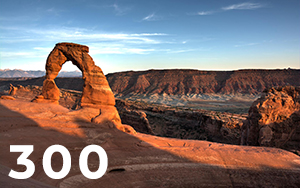

<!--Imagenes-->
<body>
    <!--con srcset optimiza las imagenes dependiendo de la resolucion de pantalla-->
    
    
    <!--mini reto-->
    <!--al parecer tambien puede variar el ancho de las imagenes especificando el ancho que les podemos dar-->
    
</body>
